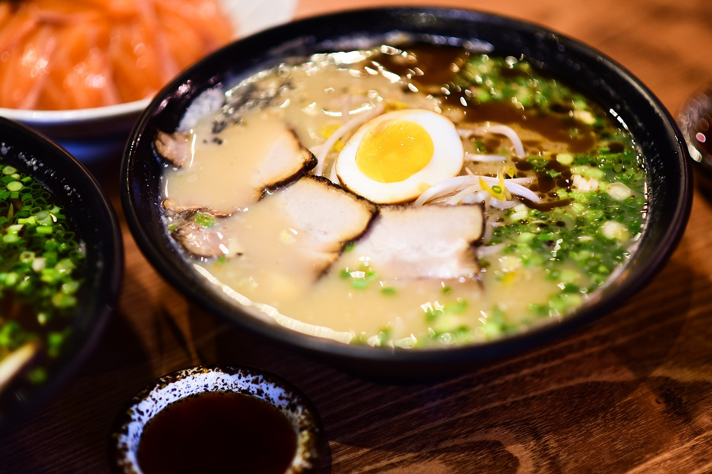

Ramen

Description
Ramen, a Japanese dish that has captured the hearts and taste buds of people worldwide, is a delectable noodle soup known for its rich broth and customizable toppings. Whether you prefer a classic shoyu (soy sauce) base, a comforting miso flavor, or the intensity of a spicy tantan broth, ramen offers a versatile and satisfying meal.
The dish typically features wheat noodles, a savory broth, and an array of toppings such as sliced meats, vegetables, and a perfectly soft-boiled egg. With its origins deeply rooted in Japan, ramen has evolved into a global culinary sensation that invites creativity and personalization in each steaming bowl.
Ingredients
- 4 cups chicken or vegetable broth
- 2 tablespoons soy sauce
- 1 tablespoon miso paste (optional)
- 1 tablespoon sesame oil
- 1 tablespoon grated ginger
- 2 cloves garlic, minced
- 1 cup sliced mushrooms
- 1 cup shredded cooked chicken or tofu for a vegetarian option
- 2 green onions, sliced
- 2 soft-boiled eggs, halved
- Nori (seaweed) sheets, torn into small pieces
- Sesame seeds for garnish
- 2 packs of ramen noodles
Steps
- In a large pot, heat sesame oil over medium heat. Add minced garlic and grated ginger, sautéing until fragrant.
- Pour in the chicken or vegetable broth, soy sauce, and miso paste (if using). Bring the broth to a gentle simmer, stirring to dissolve the miso paste.
- Cook the ramen noodles according to the package instructions. Drain and set aside.
- Add the sliced mushrooms and shredded chicken or tofu to the simmering broth. Cook for about 5 minutes until the mushrooms are tender and the protein is heated through.
- Divide the cooked ramen noodles among serving bowls and ladle the hot broth over them. Top with sliced green onions, soft-boiled eggs, torn nori sheets, and a sprinkle of sesame seeds.
- Serve immediately, allowing everyone to customize their ramen with additional condiments like chili oil or extra soy sauce. This homemade ramen promises a flavorful and comforting experience that rivals your favorite ramen shop. Enjoy!